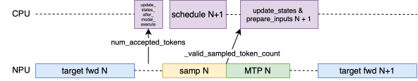
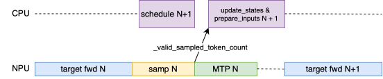
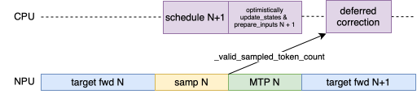

Zero-bubble async scheduling for spec decoding
vLLM PR #32951 (refactor of #29957) — how the CPU stops waiting on the GPU when async scheduling meets spec decoding.
Recap: async scheduling without spec decode
- Scheduler runs one step ahead: while the GPU executes step N, the CPU prepares step N+1.
- Sampled tokens of step N are not needed to prepare N+1 — the CPU
writes
-1placeholders and patches them later. - CPU prep of N+1 fully overlaps GPU execution of N → no bubble.
Spec decode breaks this: to prepare step N+1, the CPU must know how many
draft tokens were accepted in step N (rejection sampler output), because
num_computed_tokens, seq_lens, positions, slot_mapping all depend on it.
The fix: three mechanisms
- Optimistic CPU prep —
_update_statesassumes all drafts accepted; emits-1placeholders forprev_num_draft_lentokens and adeferred_spec_decode_correctionsclosure instead of syncing._prepare_inputsbuildsoptimistic_seq_lens_cpu. - GPU-side correction —
update_num_computed_tokens_for_batch_changerepairsnum_computed_tokens/num_accepted_tokenson the GPU using last step’svalid_sampled_token_count_gpu(never left the device).positions,seq_lens,slot_mapping(_compute_slot_mapping_kernel, triton) are now computed GPU-side from the corrected values. - Deferred CPU correction — after
execute_modelhas launched step N+1’s kernels, the closure runs_get_valid_sampled_token_count()and fixes CPU bookkeeping (req_state.num_computed_tokens,input_batch.num_computed_tokens_cpu). The sync overlaps GPU work.
Timeline
- vLLM 0.14: bubbles between “target fwd N” & “samp N”, and between “MTP N” & “target fwd N+1”; blocking and redundant D2H copies

- openPangu 2.0: remove the first buble and the redundant copy

- vLLM 0.25: remove the blocking D2H from the critical path; GPU correction done by Triton kernel; CPU correction is deferred

最后修改于 2026-07-19